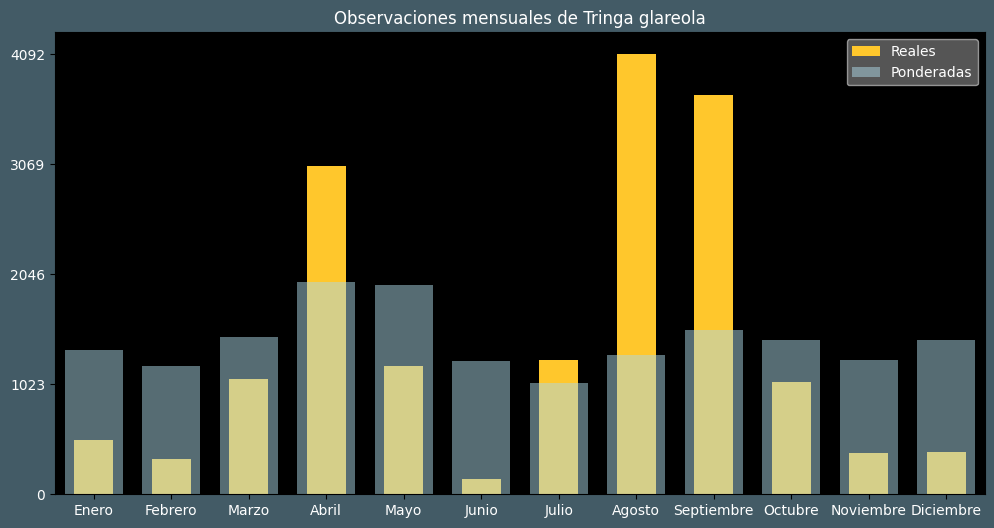

Observaciones por mes
Observations por hora

Categoría IUCN: LC
Género: Tringa
Familia: Scolopacidae
Orden: Charadriiformes
Descubrimiento: Linnaeus (1758)
| Idioma | Nombre |
|---|---|
| Afrikaans (af) | Bosruiter |
| Arabic (ar) | طيطوي الغاب |
| Belarusian (be) | Кулiк-цякун |
| Bulgarian (bg) | Малък горски водобегач |
| Catalan (ca) | Valona |
| Chinese (zh) | 林鹬 |
| Chinese traditional (zh-TW) | 鷹斑鷸〔林鷸〕 |
| Croatian (hr) | Prutka migavica |
| Czech (cs) | Vodouš bahenní |
| Danish (da) | Tinksmed |
| Dutch (nl) | Bosruiter |
| English (en) | Wood sandpiper |
| Estonian (et) | Mudatilder |
| Finnish (fi) | Liro |
| French (fr) | Chevalier sylvain |
| German (de) | Bruchwasserläufer |
| Greek (el) | Λασπότρυγγας |
| Hebrew (he) | ביצנית מנומרת |
| Hungarian (hu) | Réti cankó |
| Icelandic (is) | Flóastelkur |
| Indonesian (id) | Trinil semak |
| Italian (it) | Piro piro boschereccio |
| Japanese (ja) | タカブシギ |
| Korean (ko) | 알락도요 |
| Latvian (lv) | Purva tilbīte |
| Lithuanian (lt) | Miškinis tikutis |
| Maceodnian (mk) | Шумска тринга |
| Malayalam (ml) | പുള്ളിക്കാടക്കൊക്ക് |
| North_sami (se) | Ruonájuolčoavžžu |
| Norwegian (no) | Grønnstilk |
| Persian (fa) | آبچلیک خالدار پاسبز |
| Polish (pl) | Łęczak |
| Portuguese (pt) | Maçarico-de-dorso-malhado |
| Russian (ru) | Фифи |
| Serbian (sr) | Sprudnik migavac |
| Slovak (sk) | Kalužiak močiarny |
| Spanish (es) | Andarríos bastardo |
| Swedish (sv) | Grönbena |
| Thai (th) | นกชายเลนน้ำจืด |
| Turkish (tr) | Orman düdükçünü |
| Ukrainian (uk) | Коловодник болотяний |